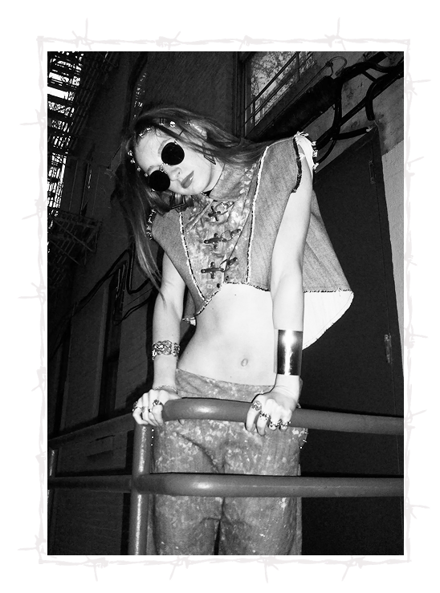

PUNK CULTURE
How and why are you redefining punk and what does punk culture mean to you?
Not every look is extremely punk as far as runway versus what is being sold, it’s very different. The runway looks atr more exaggerated. I’m redefining by using little elements, such as studs, triangular shapes, and certain color schemes. Toned down garments as well, like a hoodie but with studs. Small references and nods to the culture. What punk culture means to me is people who decide to fight for what they believe in. Not caring what anyone thinks , being unapologetic about it.